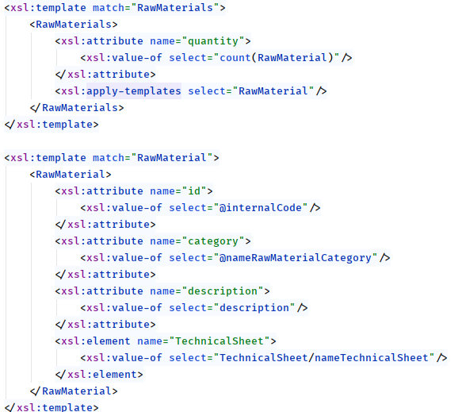

![]()
Smart Shop Floor Management
Disciplina de Linguagens e Programação (LPROG) do 2º ano curricular
Turma: 2DB
Grupo
| Nome | Número | |
|---|---|---|
| Bruno Veiga | 1180712 | 1180712@isep.ipp.pt |
| João Leal | 1180723 | 1180723@isep.ipp.pt |
| Pedro Brandão | 1180715 | 1180715@isep.ipp.pt |
| Bruno Ribeiro | 1180573 | 1180573@isep.ipp.pt |
Professores
| Sigla | Nome | Tipo de aula |
|---|---|---|
| AMD | Ana Madureira | T |
| ASS | Antonio Silva | TP |
| JSM | José Marinho | PL |
Data: 2020-06-14
Indice
- Introdução
- Análise
- Linguagem
- Raiz
- Elementos
- Chaves
- Transformações
- HTML
- JSON
- Texto
- XML
- Conclusão
- Referências
- Anexo1 - XML criado
Introdução
O presente relatório serve para dar a conhecer as funcionalidades desenvolvidas durante a implementação deste sistema. Foi nos proposto desenvolver uma aplicação capaz de recolher a diversidade de dados/mensagens geradas pelas diferentes máquinas/equipamentos que constituem o "chão de fábrica" de uma unidade industrial e, por outro lado, realizar o processamento desses dados de forma a satisfazer diversas necessidades, tais como:- controlo das ordens de produção e respetiva execução
- a gestão de tempo de atividade e paragem de máquinas
- a gestão de consumos de matérias-primas
- registo de quantidades efetivamente produzidas
Análise
A empresa Smart Shop Floor Management (SSFM) é especializada na área de gestão e controlo de produção realizada em unidades industriais dedicadas a distintas áreas de negócio (e.g. cortiças, calçado, cutelaria). Está preparada para gerir stocks, produtos e materiais. Oferece, ainda a possibilidade de gerar ordens de produção para determinadas linhas de produção. Oferece também capacidade de comunicação UDP e TCP (seguras nesta última) entre as diversas máquinas pertencentes ao negócio. Possui também monitorização do estado das máquinas através do Sistema de Monitorização de Máquinas. Esta é conseguida através da comunicação entre as máquinas e este sistema, através do protocolo de comunicação UDP.Linguagem
Neste projeto foi nos proposto fazer um documento XSD que validasse os elementos exportados através da aplicação desenvolvida. Após analisarmos bem o problema e criarmos a devida solução surgiram certas entidades representativas deste negócio tais como A Linha de producao, máquinas, productos, depositos, ordens de produção... assim como alguns conceitos também relevantes referentes aos resultados das ordens de producao: os consumos, os tempos efetivos, os tempos de pausa, perdas... E foram através destas entidades que nos baseamos para produzir o respetivo documento XSD . O nosso documento XSD está dividida em 3 secções:- Secção da Raiz
- Secção dos Elementos
- Secção das Chaves
Raiz
Apesar de no documento XSD estar de uma ordem diferente, comeceremos por explicar como a secção da Raiz foi estruturada. Primeiramente o documento XML tem de ser constituido por um único elemento raiz que tem como nome o acrónimo da empresa ( SSFM ) que vai conter todos os outros elementos.
<xsd:element name="SSFM" type="TSSFM">
...
</xsd:element>
<!-- General -->
<xsd:complexType name="TSSFM">
<xsd:choice minOccurs="0" maxOccurs="unbounded">
<xsd:element name="RawMaterialCategories" type="TRawMaterialCategories"/>
<xsd:element name="RawMaterials" type="TRawMaterials"/>
<xsd:element name="Products" type="TProducts"/>
<xsd:element name="Deposits" type="TDeposits"/>
<xsd:element name="ProductionSheets" type="ProductionSheets"/>
<xsd:element name="Lots" type="TLots"/>
<xsd:element name="ProductionOrders" type="TProductionOrders"/>
<xsd:element name="ProductionLines" type="TProductionLines"/>
<xsd:element name="Consumptions" type="TConsumptions"/>
<xsd:element name="Wastes" type="TWastes"/>
<xsd:element name="Machines" type="TMachines"/>
<xsd:element name="EffectiveTimes" type="TEffectiveTimes"/>
<xsd:element name="BruteTimes" type="TBruteTimes" />
</xsd:choice>
</xsd:complexType>
Elementos
Nesta secção é onde se encontram defenidos todos os elementos do negócio assim como elementos simples usados para complementar os complexos. Os complexos vão desde elementos com apenas astributos:
<xsd:complexType name="TMachineID">
<xsd:attribute name="InternalCode" type="xsd:string" use="required" />
</xsd:complexType>
<xsd:complexType name="TEffectiveConsumptions">
<xsd:sequence>
<xsd:element name="Consumption" type="TEffectiveConsumption" maxOccurs="unbounded" />
</xsd:sequence>
</xsd:complexType>
...
<xsd:complexType name="TTechnicalSheet">
<xsd:sequence>
<xsd:element name="nameTechnicalSheet" type="xsd:string" />
</xsd:sequence>
</xsd:complexType>
<xsd:complexType name="TMachine">
<xsd:sequence>
<xsd:element name="SerialNumber" type="TSerialNumber" />
<xsd:element name="Description" type="TDescription" />
<xsd:element name="InstallationDate" type="TDate" />
<xsd:element name="Brand" type="TBrand" />
<xsd:element name="Model" type="TModel" />
<xsd:element name="Protocol" type="TProtocol" minOccurs="0" />
<xsd:element name="Machine" type="TMachineID" minOccurs="0" />
<xsd:element name="ConfigurationFiles" type="TConfigurationFiles" minOccurs="0" />
</xsd:sequence>
<xsd:attribute name="InternalCode" type="TInternalCode" use="required" />
<xsd:attribute name="State" type="TMachineState" use="required" />
</xsd:complexType>
<xsd:complexType name="TConfigurationFile">
<xsd:simpleContent>
<xsd:extension base="xsd:string">
<xsd:attribute name="File" type="TFile" />
</xsd:extension>
</xsd:simpleContent>
</xsd:complexType>
Chaves
E por utlimo temos a secção das chaves. As chaves são usadas para fazer as devidas correspondências que existem no negócio, como por exemplo as perdas (Wastes) têm de fazer referência a várias entidades(ex.: Ordem de produção, Máquina...). Para que isto seja possível é preciso criar keys para identificar elementos que vão ser usados como referências, e os keyref que vão ser usados para referir as keys. A key da ordem de produção:
<!-- Production Order -->
<xsd:key name="ProductionOrderKey">
<xsd:selector xpath="ProductionOrders/ProductionOrder" />
<xsd:field xpath="@internalCode" />
</xsd:key>
<!-- Wastes -->
<xsd:keyref name="WastesProductionOrderRefKey" refer="ProductionOrderKey">
<xsd:selector xpath="Wastes/Waste/ProductionOrder" />
<xsd:field xpath="@ID" />
</xsd:keyref>
Transformações
O XML pode ser transformado em outros tipos, nomeadamente:- HTML
- JSON
- Texto
- XML
HTML
A transformação para HTML, oferece a possibilidade de transformar o ficheiro XML, num ficheiro com formatação HTML para que seja possível ler em browsers ou outros editores. Para além disso, são fornecidos três formatos. Um deles, possui uma formatação normal de HTML, onde a informação é apresentada em tabelas que possuem as informações necessárias, como por exemplo ID do produto, a quantidade, o ID da ficha de produção, entre outros. O segundo formato, apresenta a mesma informação que este ultimo, mas, ao invés de utilizar tabelas, são usados parágrafos e headers para organizar a informação. O terceiro formato, apresenta a informação sobre as quantidades que existem sobre aquele determinado elemento, dá informações sobre os consumos: o maior, menor, a média e o consumo total.
Exemplo de código de transformação para HTML de consumos, incluindo maximos, minimos, médias e totais
<xsl:template match="Consumptions">
<xsl:apply-templates select="EffectiveConsumptions"/>
</xsl:template>
<xsl:template match="EffectiveConsumptions">
<p>
Total consumption: <xsl:value-of select="sum(Consumption/quantity)"/>
<br/>
Average Consumption: <xsl:value-of select="avg(Consumption/quantity)"/>
<h3>Smallest Consumption</h3>
<xsl:variable name="min">
<xsl:value-of select="min(Consumption/quantity)"/>
</xsl:variable>
<xsl:variable name="material">
<xsl:value-of select="(Consumption/@rawMaterial[$min=(../quantity)])[1]"/>
</xsl:variable>
<xsl:variable name="materialMax">
<xsl:value-of select="(Consumption/@rawMaterial[$min=(../quantity)])[1]"/>
</xsl:variable>
<ul>
<li>
Quantity: <xsl:value-of select="min(Consumption/quantity)"/>
</li>
<li>
Machine: <xsl:value-of select="(Consumption/@machine[$min=(../quantity)])[1]"/>
</li>
<li>
<xsl:if test="Consumption/@deposit">
Deposit: <xsl:value-of select="(Consumption/@deposit[$min=(../quantity)])[1]"/>
</xsl:if>
</li>
<li>
Raw material:
<xsl:choose>
<xsl:when test="$material!=''">
<xsl:value-of select="$material"/>
</xsl:when>
<xsl:when test="$material=''">
<xsl:value-of select="(Consumption/@product[$min=(../quantity)])[1]"/>
</xsl:when>
</xsl:choose>
</li>
</ul>
<h3>Biggest Consumption</h3>
<xsl:variable name="max">
<xsl:value-of select="min(Consumption/quantity)"/>
</xsl:variable>
<ul>
<li>
Quantity: <xsl:value-of select="max(Consumption/quantity)"/>
</li>
<li>
Machine: <xsl:value-of select="(Consumption/@machine[$max=(../quantity)])[1]"/>
</li>
<li>
<xsl:if test="Consumption/@deposit">
Deposit: <xsl:value-of select="(Consumption/@deposit[$max=(../quantity)])[1]"/>
</xsl:if>
</li>
<li>
Raw material:
<xsl:choose>
<xsl:when test="$material!=''">
<xsl:value-of select="$material"/>
</xsl:when>
<xsl:when test="$material=''">
<xsl:value-of select="(Consumption/@product[$max=(../quantity)])[1]"/>
</xsl:when>
</xsl:choose>
</li>
</ul>
</p>
</xsl:template>
JSON
A transformação para JSON possui também três formatos, nas mesmas medidas que o formato anterior. O primeiro e o segundo formato apresentam a informação presente na aplicação, enquanto que o terceiro apresenta a informação tratada, com indicação de quantidades e movimentos de stock. (RefW_bizcoder) (RefB_BeginningJson)
Template Principal de JSON
<xsl:template match="/SSFM">
{
"SSFM" : {
<xsl:apply-templates select="RawMaterialCategories"/>
<xsl:apply-templates select="RawMaterials"/>
<xsl:apply-templates select="Products"/>
<xsl:apply-templates select="Deposits"/>
<xsl:apply-templates select="ProductionSheets"/>
<xsl:apply-templates select="Lots"/>
<xsl:apply-templates select="ProductionOrders"/>
<xsl:apply-templates select="ProductionLines"/>
}
}
</xsl:template>
Exemplo de Transformação
<xsl:template match="Deposits">
"Deposits" : { "Deposit" :[
<xsl:apply-templates select="Deposit"/>
]}<xsl:if test="following-sibling::*">,</xsl:if>
</xsl:template>
<xsl:template match="Deposit">
{
"internalCode" : "<xsl:value-of select="@internalCode"/>",
"Description" : "<xsl:value-of select="Description"/>",
<xsl:for-each select="RawMaterials/RawMaterial">
"rawMaterialID<xsl:value-of select="position()"/>" : "<xsl:value-of select="@ID"/>",
"RMQuantity<xsl:value-of select="position()"/>" : "<xsl:value-of select="@Quantity"/>"
<xsl:if test="following-sibling::*">,</xsl:if>
</xsl:for-each>
<xsl:for-each select="Products/Product">
"productID<xsl:value-of select="position()"/>" : "<xsl:value-of select="@ID"/>",
"PQuantity<xsl:value-of select="position()"/>" : "<xsl:value-of select="@Quantity"/>"
<xsl:if test="following-sibling::*">,</xsl:if>
</xsl:for-each>}
<xsl:if test="following-sibling::*">,</xsl:if>
</xsl:template>
Texto
A transformação para Texto possui dois formatos. Um com uma formatação normal, e outro com os consumos e quantidades de cada elemento presente no XML
Template principal de texto
<xsl:template match="/SSFM">
<xsl:apply-templates select="RawMaterialCategories"/>
<xsl:apply-templates select="RawMaterials"/>
<xsl:apply-templates select="Products"/>
<xsl:apply-templates select="Deposits"/>
<xsl:apply-templates select="ProductionSheets"/>
<xsl:apply-templates select="Lots"/>
<xsl:apply-templates select="ProductionOrders"/>
<xsl:apply-templates select="ProductionLines"/>
<xsl:apply-templates select="Consumptions"/>
</xsl:template>
Exemplo de Transformação de Consumos Reais
<xsl:template match="RealConsumptions">
RealConsumptions:<xsl:apply-templates select="Deposit"/>
<xsl:apply-templates select="RawMaterial"/>
<xsl:apply-templates select="Product"/>
</xsl:template>
<xsl:template match="//RealConsumptions/Deposit">
Deposit :<xsl:value-of select="@id"/>
Quantity: <xsl:value-of select="quantity"/>
</xsl:template>
<xsl:template match="//RealConsumptions/RawMaterial">
RawMaterial: <xsl:value-of select="@id"/>"
Quantity: <xsl:value-of select="quantity"/>"
</xsl:template>
<xsl:template match="//RealConsumptions/Product">
Product: <xsl:value-of select="@id"/>"
Quantity: <xsl:value-of select="quantity"/>"
</xsl:template>
XML
A transformação para XML, oferece a possibilidade de colocar o XML num formato diferente. No nosso caso, cada elemento foi colocado com mais atributos. ao contrário de novos elementos-filho.
Conclusão
Esta iteração da aplicação é capaz de satisfazer todas as exigências do cliente e as suas funcionalidades são fáceis de entender e simples de usar. Como tal, achamos que a aplicação está pronta para ser usada para os fins requeridos do cliente. Para além das funcionalidades da aplicação, os documentos xml e xsd e as transformações xsl encontram-se igualmente num estado completo, capaz de ser usufruido pelo cliente. A comunicação entre a aplicação e maquinaria também foi extensivamente testada de forma a ser intuitiva, eficiente e robusta, tal como a interação com a base de dados através da aplicação. Nestes dois últimos aspetos foi tomado em conta o facto que pode haver várias instâncias do nosso programa a correr simultâneamente. No estado em que se encontra a aplicação, isso não será problema. A documentação da estrutura e funcionamento do nosso programa é bastante extensiva e detalhada, pelo que não deve haver desentendimento sobre o funcionamento da aplicação.Referências
Titulo: Beginning JSONData publicação: 2015
Autor: Ben Smith
URL: https://www.w3schools.com/
Descrição: THE WORLD'S LARGEST WEB DEVELOPER SITE
Data de consulta: 2020-06-12
URL: http://www.bizcoder.com/convert-xml-to-json-using-xslt?fbclid=IwAR36KvzJg4dWhG1EeofxfA5CcL5APF5oBwe8zp-Oi7ydTvl035asVg6RE5o
Descrição: Convert XML to JSON using XSLT
Data de consulta: 2020-06-05
Anexo1 - XML criado
<SSFM xmlns:xsi="http://www.w3.org/2001/XMLSchema-instance" xsi:noNamespaceSchemaLocation="global.xsd">
<RawMaterialCategories>
<RawMaterialCategory name="cat1">
<description>Wood</description>
</RawMaterialCategory>
<RawMaterialCategory name="cat2">
<description>Metal</description>
</RawMaterialCategory>
</RawMaterialCategories>
<RawMaterials>
<RawMaterial internalCode="rm1" nameRawMaterialCategory="cat1">
<description>softwood</description>
<TechnicalSheet>
<nameTechnicalSheet>softwood.pdf</nameTechnicalSheet>
</TechnicalSheet>
</RawMaterial>
<RawMaterial internalCode="rm2" nameRawMaterialCategory="cat1">
<description>softwood</description>
<TechnicalSheet>
<nameTechnicalSheet>softwood.pdf</nameTechnicalSheet>
</TechnicalSheet>
</RawMaterial>
<RawMaterial internalCode="rm3" nameRawMaterialCategory="cat2">
<description>iron</description>
<TechnicalSheet>
<nameTechnicalSheet>iron.pdf</nameTechnicalSheet>
</TechnicalSheet>
</RawMaterial>
<RawMaterial internalCode="rm4" nameRawMaterialCategory="cat2">
<description>steel</description>
<TechnicalSheet>
<nameTechnicalSheet>steel.pdf</nameTechnicalSheet>
</TechnicalSheet>
</RawMaterial>
</RawMaterials>
<Products>
<Product fabricationCode="product1">
<comercialCode>cc23321</comercialCode>
<briefDescription>Iron Pickaxe</briefDescription>
<completeDescription>Iron Pickaxe for Mining</completeDescription>
<productCategory>Tools</productCategory>
<unity>UN</unity>
<productionSheet>ps3221</productionSheet>
</Product>
<Product fabricationCode="product4">
<comercialCode>cc23321</comercialCode>
<briefDescription>Iron Picaxe</briefDescription>
<completeDescription>Iron Picaxe for Mining</completeDescription>
<productCategory>Tools</productCategory>
<unity>UN</unity>
<productionSheet>ps3221</productionSheet>
</Product>
<Product fabricationCode="product2">
<comercialCode>cc23321</comercialCode>
<briefDescription>Iron Pickaxe</briefDescription>
<completeDescription>Iron Pickaxe for Mining</completeDescription>
<productCategory>Tools</productCategory>
<unity>UN</unity>
<productionSheet>ps3221</productionSheet>
</Product>
<Product fabricationCode="product3">
<comercialCode>cc23111</comercialCode>
<briefDescription>Coffee Maker</briefDescription>
<completeDescription>Ideal For making coffee</completeDescription>
<productCategory>Beverages</productCategory>
<unity>UN</unity>
<productionSheet>ps3222</productionSheet>
</Product>
</Products>
<Deposits>
<Deposit internalCode="d1">
<Description>d1</Description>
<Products>
<Product ID="d" Quantity="2" />
</Products>
</Deposit>
<Deposit internalCode="d2">
<Description>d2</Description>
<RawMaterials>
<RawMaterial ID="rm2" Quantity="2" />
</RawMaterials>
</Deposit>
<Deposit internalCode="d3">
<Description>d3</Description>
<RawMaterials>
<RawMaterial ID="rm2" Quantity="1" />
</RawMaterials>
<Products>
<Product ID="d" Quantity="5" />
</Products>
</Deposit>
</Deposits>
<ProductionSheets>
<ProductionSheet ID="ps3221">
<ProductionSheetLineProduct>
<Product ID="product1" Quantity="3" />
</ProductionSheetLineProduct>
<ProductionSheetLineRawMaterial>
<RawMaterial ID="rm2" Quantity="5" />
<RawMaterial ID="rm4" Quantity="2" />
</ProductionSheetLineRawMaterial>
</ProductionSheet>
<ProductionSheet ID="ps3222">
<ProductionSheetLineProduct>
<Product ID="product1" Quantity="3" />
</ProductionSheetLineProduct>
<ProductionSheetLineRawMaterial>
<RawMaterial ID="rm1" Quantity="5" />
<RawMaterial ID="rm3" Quantity="2" />
</ProductionSheetLineRawMaterial>
</ProductionSheet>
</ProductionSheets>
<Lots>
<Lot internalCode="lot1" />
</Lots>
<ProductionOrders>
<ProductionOrder internalCode="po1">
<Description>po1</Description>
<State>Suspended</State>
<Lot ID="lot1" />
<Request ID="req1" />
<EmissionDate>2022-10-10</EmissionDate>
<PredictedExecutionDate>2023-10-10</PredictedExecutionDate>
<ProductionSheet ID="ps1" />
<QuantityToProduce>1</QuantityToProduce>
</ProductionOrder>
</ProductionOrders>
<ProductionLines>
<ProductionLine internalCode="pl1">
<Description>pl1</Description>
<Machines>
<Machine ID="m1" />
<Machine ID="m2" />
</Machines>
</ProductionLine>
</ProductionLines>
<Consumptions>
<EffectiveConsumptions>
<Consumption machine="mach1" deposit="d1" rawMaterial="rm1">
<quantity>20</quantity>
</Consumption>
<Consumption machine="mach1" deposit="d1" rawMaterial="rm2">
<quantity>20</quantity>
</Consumption>
<Consumption machine="mach1" deposit="d2" product="product3">
<quantity>10</quantity>
</Consumption>
<Consumption machine="mach1" deposit="d2" product="product2">
<quantity>20</quantity>
</Consumption>
<Consumption machine="mach1" product="product4">
<quantity>20</quantity>
</Consumption>
</EffectiveConsumptions>
<RealConsumptions>
<Deposit id="d1">
<quantity>40</quantity>
</Deposit>
<Deposit id="d2">
<quantity>30</quantity>
</Deposit>
<RawMaterial id="rm1">
<quantity>20</quantity>
</RawMaterial>
<RawMaterial id="rm2">
<quantity>20</quantity>
</RawMaterial>
<Product id="product3">
<quantity>10</quantity>
</Product>
<Product id="product2">
<quantity>20</quantity>
</Product>
</RealConsumptions>
</Consumptions>
<Wastes>
<!--1 or more repetitions:-->
<Waste quantity="3">
<Machine InternalCode="mach1"/>
<Deposit ID="d2"/>
<!--Optional:-->
<RawMaterial ID="rm2"/>
<ProductionOrder ID="po1"/>
</Waste>
<Waste quantity="30">
<Machine InternalCode="mach2"/>
<Deposit ID="d2"/>
<!--Optional:-->
<Product ID="product1"/>
<ProductionOrder ID="po1"/>
</Waste>
</Wastes>
<Machines>
<Machine InternalCode="mach1" State="Disable">
<SerialNumber>A12031010230</SerialNumber>
<Description>Máquina de engomar</Description>
<InstallationDate>2008-11-15</InstallationDate>
<Brand>Ford</Brand>
<Model>103</Model>
<!--Optional:-->
<Protocol ID="100" />
<ConfigurationFiles>
<!--1 or more repetitions:-->
<ConfigurationFile File="string.txt">config1</ConfigurationFile>
</ConfigurationFiles>
</Machine>
<Machine InternalCode="mach2" State="Active">
<SerialNumber>A12031010231</SerialNumber>
<Description>Máquina de Parafusar</Description>
<InstallationDate>2008-11-15</InstallationDate>
<Brand>Ford</Brand>
<Model>105</Model>
<!--Optional:-->
<Machine InternalCode="mach1" />
<ConfigurationFiles>
<!--1 or more repetitions:-->
<ConfigurationFile File="config0.txt">config10</ConfigurationFile>
<ConfigurationFile File="config.1txt">config11</ConfigurationFile>
<ConfigurationFile File="config.t2xt">config12</ConfigurationFile>
</ConfigurationFiles>
</Machine>
</Machines>
<EffectiveTimes>
<!--1 or more repetitions:-->
<EffectiveTime Minutes="5" Seconds="3">
<Machine InternalCode="mach1"></Machine>
<ProductionOrder ID="po1"></ProductionOrder>
</EffectiveTime>
<EffectiveTime Minutes="10" Seconds="0">
<Machine InternalCode="mach2"></Machine>
<ProductionOrder ID="po1"></ProductionOrder>
</EffectiveTime>
</EffectiveTimes>
<BruteTimes>
<!--1 or more repetitions:-->
<BruteTime Minutes="5" Seconds="3">
<Machine InternalCode="mach1"></Machine>
<ProductionOrder ID="po1"></ProductionOrder>
</BruteTime>
<BruteTime Minutes="15" Seconds="36">
<Machine InternalCode="mach2"></Machine>
<ProductionOrder ID="po1"></ProductionOrder>
</BruteTime>
</BruteTimes>
</SSFM>